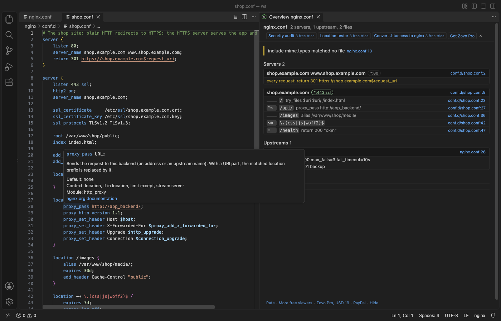

Định dạng và kiểm tra tệp cấu hình nginx trong VS Code
Cài tiện ích miễn phí Nginx Config Formatter & Lint, mở một tệp cấu hình nginx và nhấn Shift+Alt+F (Shift+Option+F trên Mac). Bộ định dạng phân tích lại chính kết quả của nó và không thay đổi gì nếu tệp sẽ không còn được đọc như cũ, nên cấu hình hợp lệ vẫn hợp lệ. Tô màu cú pháp, lỗi hiện khi gõ kèm sửa nhanh, hover cho khoảng 300 directive, gợi ý, outline và bản tổng quan cấu hình qua các tệp include đều miễn phí và chạy trên máy của bạn. Zovo Pro (19 USD, trả một lần) thêm ba công cụ Security Audit, Location Tester và Convert .htaccess to nginx, mỗi công cụ có 3 lượt dùng thử miễn phí.
Miễn phí, giấy phép MIT. ID tiện ích zovo.zovo-nginx-config, phiên bản 0.1.0.
Hướng dẫn này cũng có bằng English · Français · 한국어 · Polski · Português (Brasil) · Русский · 简体中文 · Türkçe · Bahasa Indonesia · हिन्दी · ไทย · Українська

Các bước trong VS Code
- Cài Nginx Config Formatter & Lint từ Marketplace, hoặc nhấn Ctrl+P (Cmd+P trên macOS) rồi chạy
ext install zovo.zovo-nginx-config. - Mở tệp cấu hình. Tệp được mở dưới dạng nginx khi có tên
nginx.confhoặc đuôi.nginxhay.nginxconf, hoặc khi là tệp.conftrong một thư mục tên nginx (như/etc/nginx/conf.d/default.conf), hoặc là một tệp trongnginx/sites-available,nginx/sites-enabledhaynginx/snippets. Với các tệp khác, chọn "nginx" làm language mode. - Nhấn Shift+Alt+F (Shift+Option+F trên Mac). Bạn có mỗi câu lệnh một dòng với thụt lề của trình soạn thảo, giá trị
log_formatdài giữ chỗ xuống dòng, và tối đa một dòng trống liên tiếp được giữ lại (cài đặtnginxConfig.format.maxBlankLines). - Lỗi hiện ngay khi gõ: thiếu
;, dấu ngoặc nhọn chưa đóng hoặc bị thừa, chuỗi chưa đóng, directive nằm sai khối,roothoặclistenbị trùng, hai server cùng tên trên một cổng. Nhấn Ctrl+. (Cmd+. trên Mac) để sửa nhanh, ví dụ "Add the missing ";"" hoặc đổiproxy_set_hederthànhproxy_set_header. - Rê chuột lên một directive để xem cú pháp, giá trị mặc định, các khối được phép và liên kết tới tài liệu nginx. Gợi ý (completion) đưa ra các directive được phép trong khối hiện tại, và các biến sau
$. - Bấm biểu tượng danh sách trên thanh tiêu đề trình soạn thảo, hoặc chạy "Nginx: Show Config Overview", để xem mọi server với cổng và tên, và mọi location với việc nó làm, qua các tệp
include. Bấm vào tệp và dòng để đi tới đó.
Những gì miễn phí và Zovo Pro thêm gì
Tô màu cú pháp (khối Lua được tô màu như Lua), Format Document, lỗi kèm sửa nhanh, hover, gợi ý, outline và bản tổng quan cấu hình đều miễn phí. Mọi thứ chạy trên máy của bạn, không có yêu cầu mạng.
Security Audit kiểm tra cấu hình cùng mọi tệp include của nó và liệt kê từng phát hiện với tệp, dòng, lý do cần quan tâm và cách sửa, xếp theo mức high, medium và low. Công cụ tìm TLS 1.0 và 1.1, cipher yếu, server HTTPS thiếu HSTS và các security header khác, location có add_header riêng làm mất các header đó mà không báo, lỗi path traversal off-by-slash của alias, proxy_pass tới host lấy từ request, tệp .git và .env bị phục vụ ra ngoài, liệt kê thư mục và request body không giới hạn. Bạn tìm ra các lỗi này trước khi cấu hình lên production, mà không phải tự đọc từng tệp include.
Cách dùng Security Audit (Zovo Pro)
- Bấm "Security audit" trong dòng Pro tools trên thanh công cụ của bản tổng quan cấu hình, nhấp chuột phải vào một tệp
.confhoặc.nginxtrong Explorer và chọn "Zovo Pro: Security audit", hoặc chạy "Nginx: Security Audit (Pro)" từ Command Palette. - Kết quả kiểm tra mở bên cạnh trình soạn thảo. Mỗi phát hiện hiện tệp và dòng, lý do và cách sửa. Bấm vào tệp và dòng để đi tới đó.
- Bấm "Save report" để lưu các phát hiện thành tệp Markdown.
- Chỉ tính một lượt dùng thử khi kết quả kiểm tra đã hiện. Nhấn Escape, hoặc tệp không có khối http hay server, thì không tốn lượt.
Security Audit chạy được 3 lần miễn phí trên máy của bạn trước khi yêu cầu giấy phép. Không có cửa sổ bật lên và không có đếm ngược.
Zovo Pro có giá 19 USD, trả một lần. Đây không phải gói thuê bao, và giấy phép mở các công cụ Pro trong mọi tiện ích Zovo, không chỉ trong Nginx Config Formatter & Lint. Sau khi bạn thanh toán bằng thẻ (Stripe), khóa giấy phép hiện ở trang tiếp theo. Trong VS Code, chạy "Zovo Pro: Enter Zovo Pro license key" từ Command Palette rồi dán khóa vào. Khóa được kiểm tra ngay trên máy của bạn, không cần kết nối mạng. Nếu dùng GitHub Sponsors, hãy chọn mức "$19 one time", rồi chạy "Zovo Pro: I already paid: unlock with GitHub Sponsors".
Nhóm 5 người trả 59 USD, cũng một lần (bằng thẻ). Mọi quy định và mọi công cụ Pro có trên trang Zovo Pro (tiếng Anh).
Các bước trong Cursor, Windsurf hoặc VSCodium
- Mở khung Extensions bằng Ctrl+Shift+X (Cmd+Shift+X trên macOS).
- Tìm
zovo.zovo-nginx-configrồi bấm Install. Cursor, Windsurf và VSCodium cài tiện ích từ Open VSX, nơi tiện ích này có tênzovo/zovo-nginx-config. - Nếu trình soạn thảo của bạn không có kho tiện ích, hãy tải tệp .vsix từ trang Open VSX rồi chạy "Extensions: Install from VSIX...".
- Sau đó mọi thứ hoạt động giống như trong VS Code.
Nginx Config Formatter & Lint làm được gì
- Directive của OpenResty/Lua, headers-more, Brotli, Passenger và các module phổ biến khác đều được nhận ra và không bao giờ bị đánh dấu.
- Khối Lua như
content_by_lua_blockđược tô màu như Lua. - View Outline liệt kê server kèm tên và cổng, location, upstream và map.
- Include tương đối được đọc từ
nginxConfig.prefix, thư mục của tệp, thư mục cha của nó hoặc/etc/nginx, theo thứ tự đó. - Thay đổi chưa lưu trong các trình soạn thảo đang mở được dùng cho bản tổng quan và các công cụ Pro.
Những gì không làm được
- Bộ định dạng đặt một dấu cách giữa directive và giá trị của nó, nên cách căn cột như
listen 80;không được giữ. - Tệp có dấu ngoặc nhọn hoặc chuỗi chưa đóng sẽ không được định dạng. Tệp giữ nguyên và thanh trạng thái cho biết lý do.
- Các bước kiểm tra đọc tệp của bạn và không chạy
nginx -t. Tệp chứng chỉ bị thiếu hay module chưa được nạp chỉ có nginx tự tìm ra. - Regex của location được thử bằng biểu thức chính quy JavaScript. Một vài tính năng chỉ có trong PCRE (possessive quantifier, đệ quy) không thử được và được báo là bỏ qua.
Câu hỏi thường gặp
Có miễn phí không?
Định dạng, lỗi kèm sửa nhanh, hover, gợi ý, outline và bản tổng quan cấu hình đều miễn phí. Ba công cụ Pro, Security Audit, Location Tester và Convert .htaccess to nginx, mỗi công cụ có 3 lượt dùng thử miễn phí. Sau đó cần Zovo Pro, 19 USD trả một lần cho mọi tiện ích Zovo.
Định dạng có làm hỏng cấu hình của tôi không?
Không. Bộ định dạng phân tích lại chính kết quả của nó và không thay đổi gì nếu tệp sẽ không còn được đọc như cũ, nên cấu hình hợp lệ vẫn hợp lệ.
Tiện ích có thay được nginx -t không?
Không. Tiện ích đọc tệp của bạn và kiểm tra cú pháp cùng vị trí của từng directive. Hãy chạy nginx -t trên server để kiểm tra chứng chỉ và module.
Có dùng được trong Cursor không?
Có. Cursor, Windsurf và VSCodium cài tiện ích từ Open VSX, nơi nó được phát hành với tên zovo/zovo-nginx-config.
Tìm hiểu thêm
Bản hướng dẫn tiếng Anh có thêm chi tiết và các cách khác. Mọi tính năng và cài đặt được mô tả trên trang Nginx Config Formatter & Lint (tiếng Anh).
Thông tin được kiểm tra ngày 13 tháng 11 năm 2026 với phiên bản hiện tại trên Marketplace.